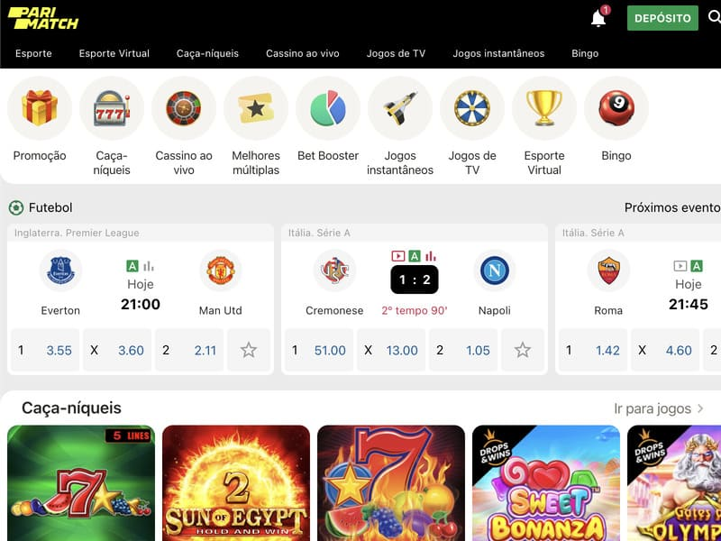
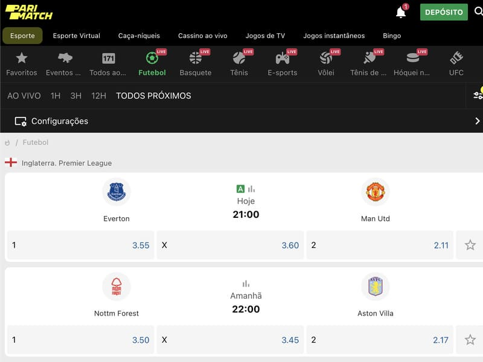
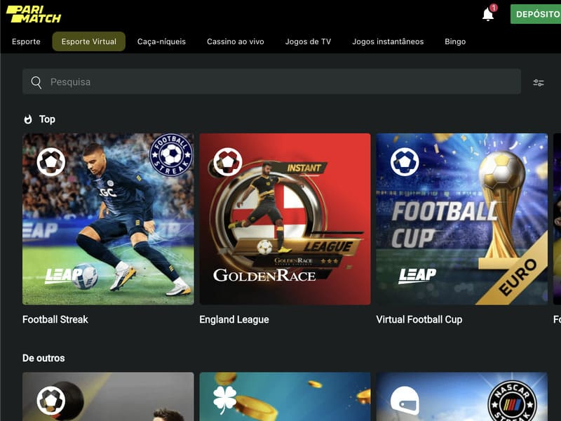
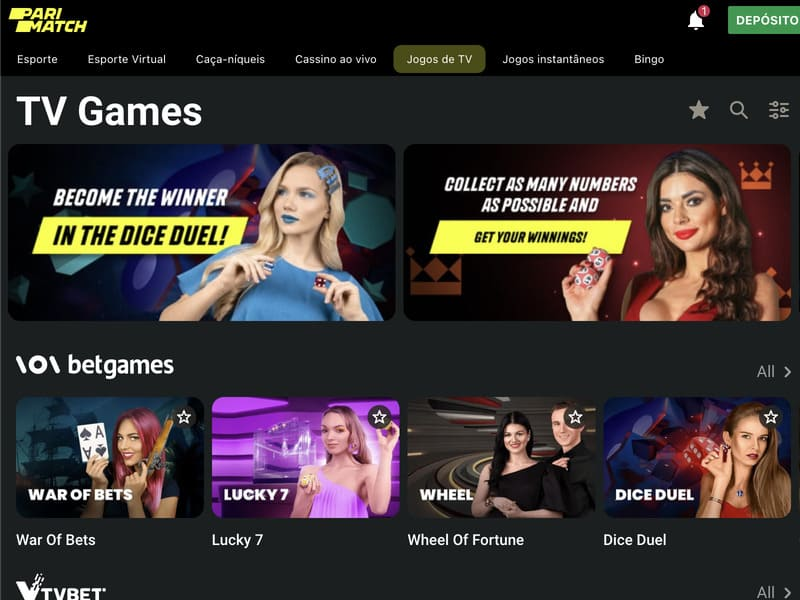

Jogar Aviator no PariMatch Casino
O lendário casino e casa de apostas Parimatch oferece aos fãs das slot machines o acesso ao software dos principais fornecedores da indústria. No sítio web do clube virtual, pode jogar o seu jogo favorito, Aviator, lançado pela Spribe. Este jogo invulgar não tem linhas de pagamento, não tem bobinas e não tem símbolos clássicos. A jogabilidade é construída em torno de um avião da sorte que pode trazer ao jogador os cobiçados ganhos. Para começar a jogar em Parimatch, precisa de se registar.
Porque jogar no PariMatch Casino é rentável
O clube online Parimatch goza de boa reputação entre os jogadores e apostadores, combinando casino e apostando na mesma plataforma. A empresa foi fundada em 1994 e o casino online foi lançado em 2010. A instituição opera com sucesso na esfera do jogo e ópera sob uma licença de Curaçao. Vantagens e características do casino incluem:
O sítio web do casino Parimatch oferece mais de 3.000 caça-níqueis, incluindo o jogo online Aviator by Spribe. Os fãs de jogos de azar têm acesso a máquinas retro, slots jackpot, roleta, jogos de cartas e jogos de mesa. Para começar a apostar por dinheiro real, os utilizadores precisam de se registar no sítio web do casino. Todos os modelos de jogos podem ser pré-testados em modo de demonstração.
Registo de casino online PariMatch
Para criar uma conta, é necessário passar por um simples procedimento de registo. Primeiro, é necessário ir ao sítio web oficial do casino Parimatch. Há um botão de Registo no canto superior direito. Há duas maneiras de fazer uma conta de jogo:
Preencha o formulário e indique o seu nome, data de nascimento, número de telefone e endereço de correio eletrónico. Depois disso, pense numa senha de login, confirme o seu 18 aniversário e concorde com as regras do clube. Para confirmar a sua conta, introduza o código de verificação a partir do SMS.
Se um jogador tiver perfis em redes sociais e mensageiros populares, é possível registar-se a curto prazo.
Jogar por dinheiro real no Pari Match Casino
O casino exige que os jogadores verifiquem as suas contas. Tem de ir à página de verificação de conta e encontrar a secção Upload Documents — fotos ou digitalizações do seu passaporte, tirar selfies. O casino dá aos recém-chegados um bónus de 100% para o primeiro depósito. Depois disso, o jogador pode utilizar todas as opções e funcionalidades do casino online, executar os seus jogos favoritos, e jogar Aviator o dinheiro real. Há várias maneiras de efetuar um depósito:
O dinheiro é imediatamente creditado na conta do jogador. Para solicitar o levantamento dos ganhos é necessário utilizar os mesmos detalhes, a partir dos quais o utilizador depositou o saldo. O depósito mínimo é de 10 euros, o levantamento do montante máximo não é limitado. Encontre Aviator em Parimatch, faça as suas apostas e divirta-se com o jogo. Boa sorte!